Uso intensivo
Pasto fibrilado
Recomendado para futbol 5, futbol rápido y canchas con tráfico constante. Alta resistencia al desgaste y buen desempeño escolar o comercial.
Suministramos e instalamos pasto sintético deportivo para canchas de futbol 5, futbol 7, futbol rápido, soccer, colegios, clubes, municipios y complejos deportivos en todo México. Si buscas pasto sintético para canchas en México, aquí cotizas con instaladores especializados.
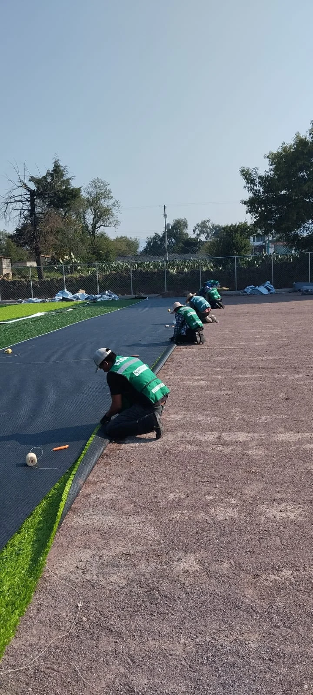
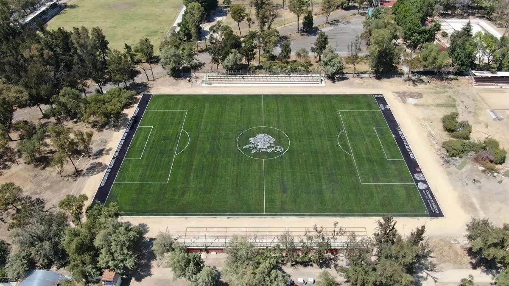
Una cancha requiere fibra correcta, uniones firmes, rellenos adecuados, líneas bien trazadas, cepillado final y mano de obra que sepa trabajar superficies de uso intensivo. Nuestro servicio cubre venta e instalación de pasto sintético para canchas, desde suministro hasta entrega lista para jugar.
Contamos con cuadrillas profesionales y más de 20 años dedicados a la instalación de canchas deportivas. Nuestro equipo trabaja uniones, cortes, líneas, rellenos y acabados para entregar superficies listas para uso intensivo.
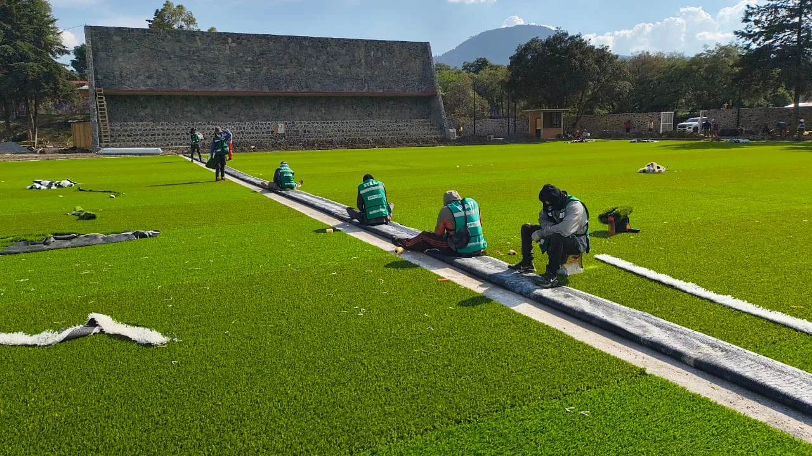
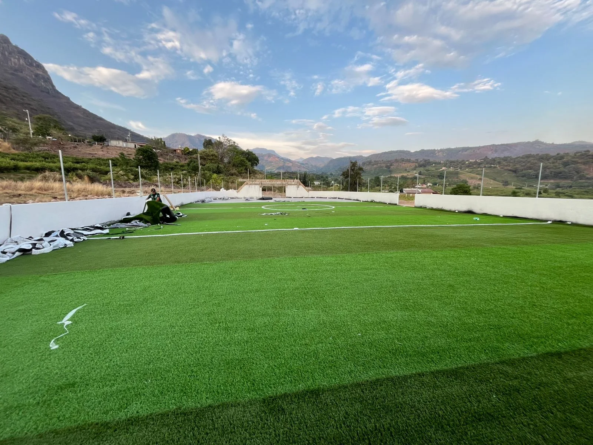
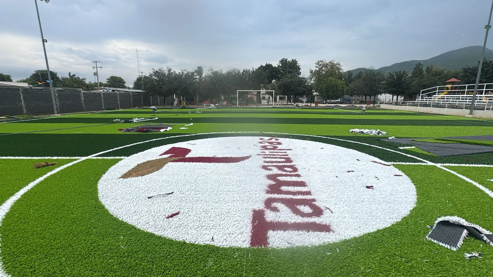
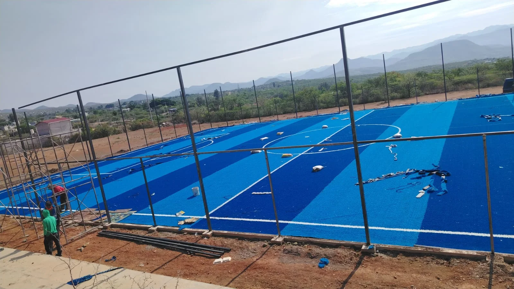
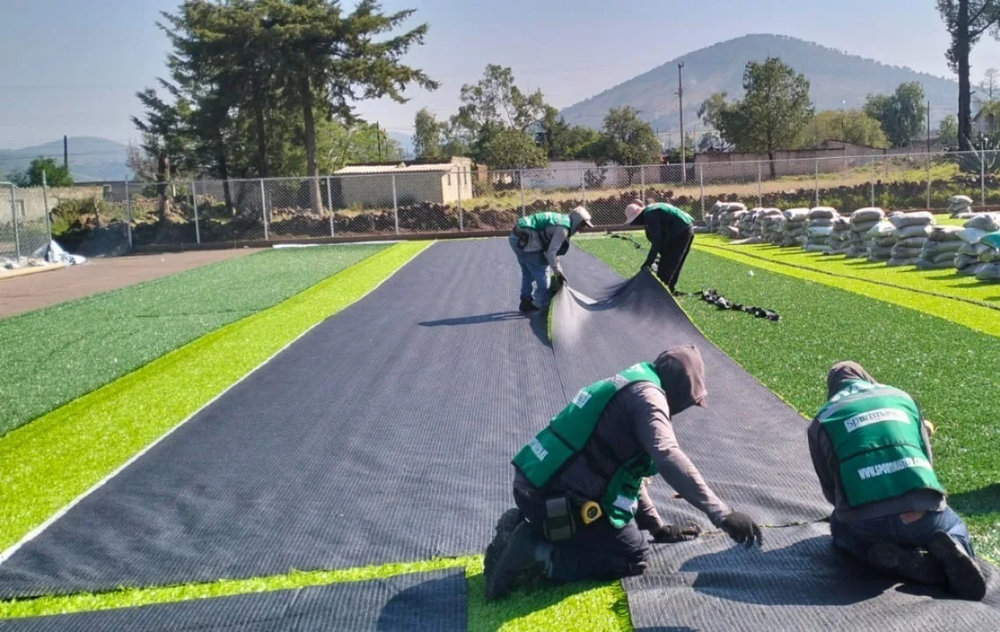
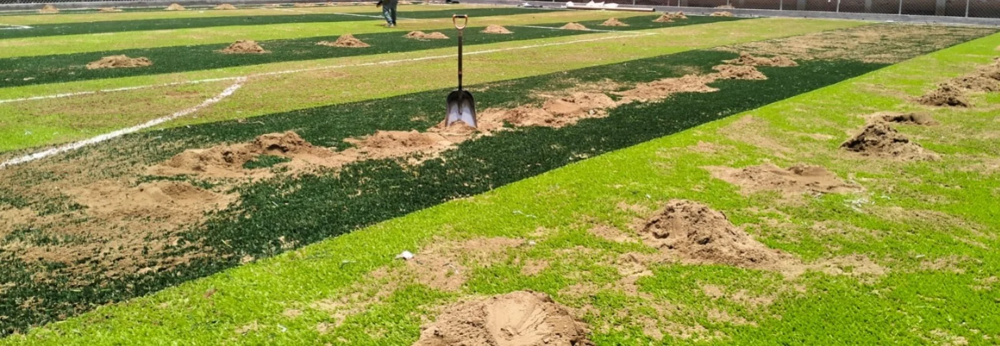
No todas las canchas necesitan el mismo sistema. Te recomendamos fibra, altura y relleno según el proyecto, ya sea pasto artificial para canchas, césped sintético deportivo o pasto especializado por tipo de futbol.
Recomendado para futbol 5, futbol rápido y canchas con tráfico constante. Alta resistencia al desgaste y buen desempeño escolar o comercial.

Ideal para futbol 7 y soccer cuando buscas mejor apariencia, recuperación de fibra y una sensación más profesional en el juego.

Combina resistencia y apariencia premium. Buena opción para colegios, municipios, clubes y canchas con uso diario.
Las fotos venden mejor que cualquier ficha técnica: textura, líneas, color, proporción y acabado final se entienden de inmediato cuando ves proyectos reales.

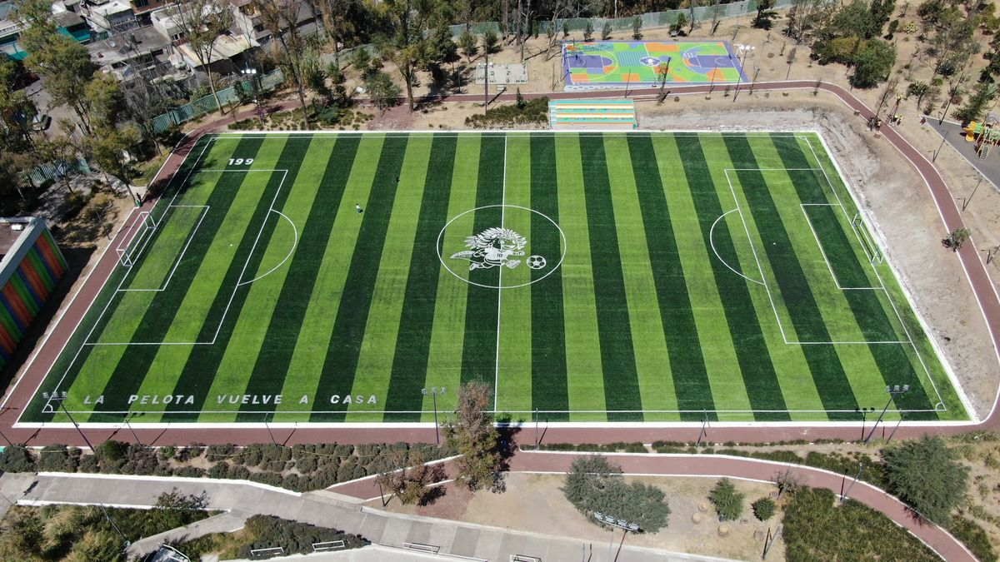

Hacer canchas de futbol nunca fue tan fácil. Manejamos instalacion de canchas de futbol 5, futbol 7, soccer, beisbol, futbol americano, padel y tenis. Pasto sintético importado con especificaciones técnicas según el deporte.
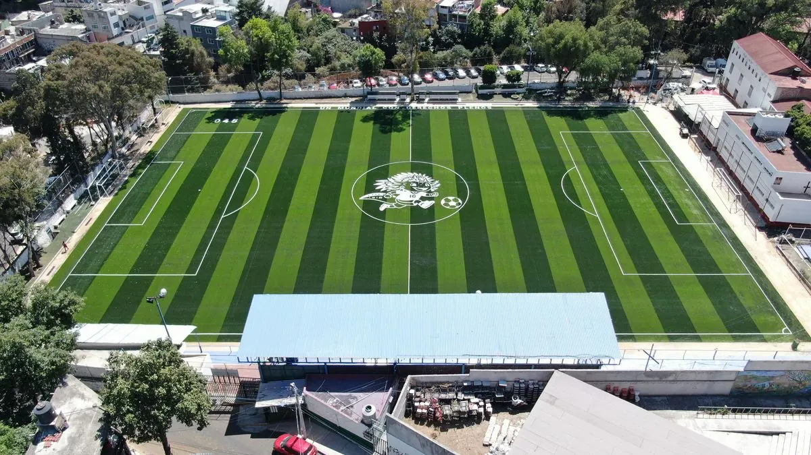
Construccion de canchas de futbol 7 · Pasto 40-45mm

Hacer canchas de futbol soccer · Pasto 45-55mm

Instalacion de canchas de futbol 5 · Pasto 30-35mm
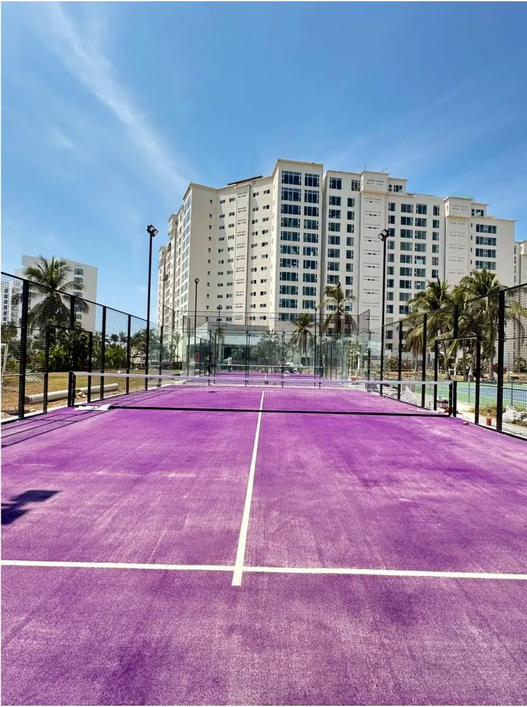
Cuanto cuesta poner una cancha de padel · Pasto 12mm
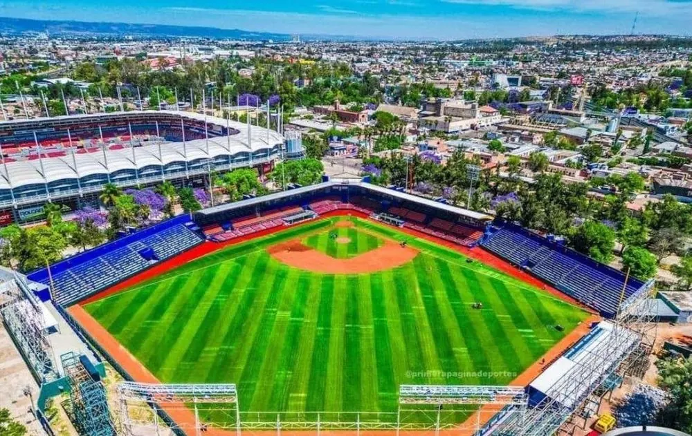
Pasto 30-40mm · Diamante completo
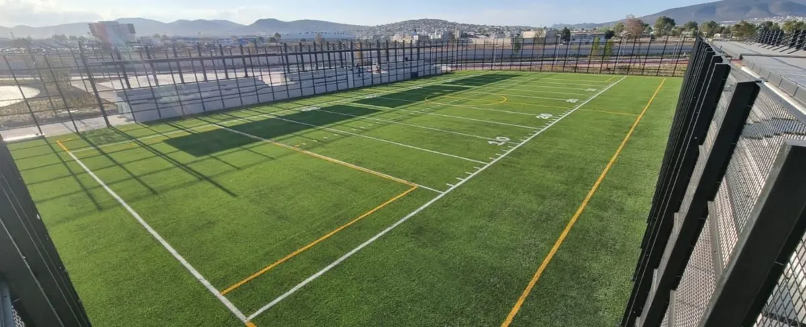
Pasto 45-55mm · Líneas oficiales
Para cotizar bien, dejamos claro lo que sí instalamos y lo que debe estar resuelto antes de entrar a cancha.
El precio depende de la superficie, tipo de pasto, altura, densidad, rellenos, ubicación y condiciones del proyecto. Si estás comparando pasto sintético para cancha de futbol precio m2, te ayudamos a calcularlo con medidas reales y alcance claro.
Ideal para proyectos compactos con uso escolar, recreativo o privado.
Pasto sintético para futbol 7 instalado en 7 a 9 días cuando el área está lista para recibir el pasto.
Pasto sintético para futbol rápido instalado con opción de redondel de madera, postes y redes.
Proyecto de mayor escala con especificaciones técnicas por uso.
Una galería ayuda a comparar acabados, colores, dimensiones y tipos de cancha antes de pedir tu cotización.


Comparte ciudad, tipo de cancha, medidas y fotos del área de instalación.
Definimos tipo de pasto, altura, densidad, líneas y rellenos.
Recibes alcance claro: suministro, instalación, rellenos, tiempos y garantías.
Colocamos pasto, líneas, rellenos, revisamos uniones y entregamos lista para jugar.
Garantía de 9 años contra decoloración por rayos UV del pasto sintético, más 2 años en instalación según alcance contratado.
Antes de cotizar, puedes revisar nuestra presencia en Google y validar la experiencia de otros clientes con instalaciones de pasto sintético deportivo.
Depende de medidas, tipo de pasto, altura, densidad, rellenos, ubicación y condiciones del proyecto. Para cotizar correctamente necesitamos medidas y tipo de deporte.
Puede incluir pasto sintético, instalación profesional, líneas de juego, arena sílica, caucho sintético, adhesivos, uniones, trazo deportivo y cepillado final.
Sí. Podemos revisar fotos, medidas y estado actual para recomendar instalación nueva, cambio de pasto, líneas o rellenos.
Se usan sistemas fibrilados, monofilamento o híbridos. La elección depende del deporte, tráfico diario, tipo de calzado y presupuesto.
Para futbol 7 se recomienda pasto sintético deportivo de 40 a 45 mm, según intensidad de uso, tipo de calzado y presupuesto.
La altura más común para futbol 7 es de 40 a 45 mm. En proyectos de mayor exigencia se revisan densidad, fibra y rellenos para mejorar desempeño.
Depende del tamaño y condiciones del proyecto. Una cancha de futbol 7 puede instalarse en 7 a 9 días cuando el área está lista para recibir el pasto.
Sí. Instalamos pasto sintético deportivo para escuelas, clubes, municipios, fraccionamientos y complejos deportivos en todo México.
Sí. Puedes cotizar suministro de pasto sintético o suministro con instalación profesional, según el proyecto.
Sí. Podemos retirar pasto viejo, cambiar líneas, reponer rellenos e instalar pasto sintético nuevo según el estado del proyecto.
Depende del tipo de pasto, uso y mantenimiento. Nuestros sistemas pueden contar con garantía de hasta 9 años contra decoloración por rayos UV.
El monofilamento ofrece mejor apariencia y recuperación de fibra. El fibrilado funciona muy bien para uso constante. Te recomendamos el sistema según deporte y tráfico.
Puede evaluarse caso por caso. Revisamos medidas, fotos, uso deportivo y condiciones del área para recomendar la solución adecuada.
Requiere limpieza periódica, cepillado, redistribución de rellenos y revisión de uniones según la intensidad de uso.
Si ya sabes qué cancha quieres construir, renovar o comparar, estas páginas te llevan al ángulo correcto sin vueltas.
Envíanos medidas, ciudad y tipo de deporte. Te respondemos por WhatsApp con una cotización personalizada en menos de 1 hora.